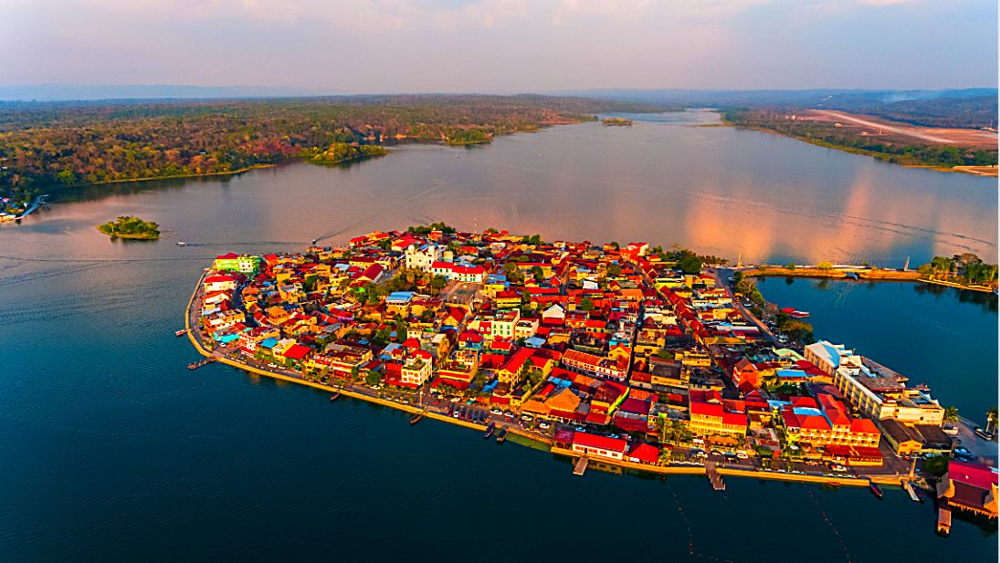
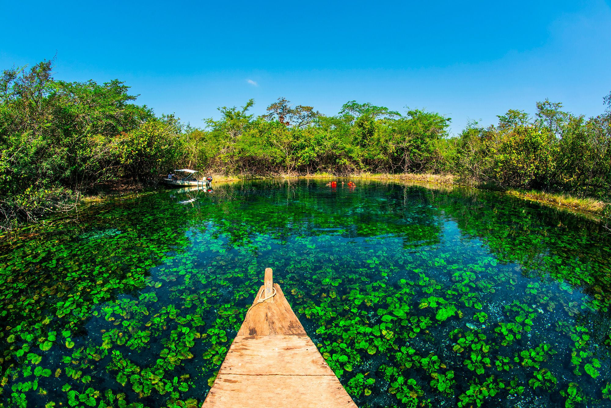
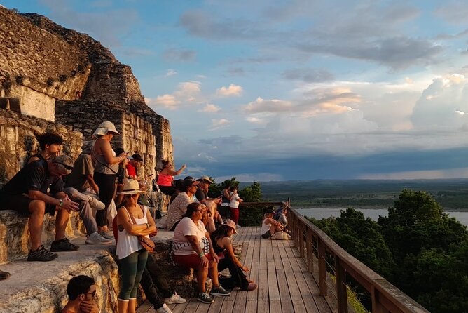

Historia de las Ruinas
- La región de Petén fue habitada por los mayas desde aproximadamente el año 1000 a. C.
- En Petén se desarrollaron grandes ciudades mayas como Tikal, El Mirador y Yaxhá.
- Tikal llegó a ser una de las ciudades más poderosas del mundo maya entre los años 200 y 900 d. C.
- Los mayas construyeron templos, pirámides, palacios y observatorios astronómicos.
Actividades Turísticas
Los visitantes pueden recorrer el pueblos alrededor del lago.

Nada en aguas cristalinas, practica snorkel y observa peces en uno de los lugares más famosos de Petén.

Camina entre templos mayas rodeados de naturaleza y disfruta de uno de los mejores atardeceres de Guatemala.

Fauna y flora
Monos aulladores
Son famosos por sus fuertes sonidos en la selva y se pueden observar en áreas protegidas y parques naturales.
Tucanes y aves exóticas
Petén es hogar de muchas aves coloridas ideales para observación y fotografía en la selva maya.
Árboles de caoba y cedro
Estos árboles tropicales forman parte de los grandes bosques naturales de Petén y son muy valiosos ecológicamente.